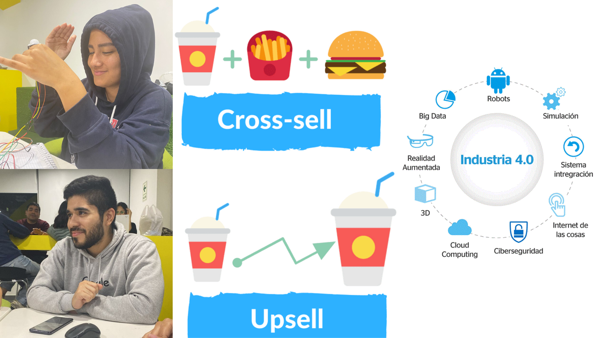

Semana 12
Clase presencial: La clase empezó con el profesor Oscar explicándonos temas sobre la escalabilidad y como podemos enfocarlo en nuestros proyectos, dando ejemplos por grupos. Además, también nos habló sobre las industrias y la evolución de estas, como fue el proceso para llegar a la Industria 4.0 que es en la que nos encontramos. Después de esto nos mencionó los significados de Up-Selling y Cross-Selling, personalmente ya sabia el significado de estas, pero me encanto como dio los ejemplos para que todos podamos entender. El coolhunting también nos enseñó, me encanto mucho este tema porque aquí pude participar en clase :D. Luego de esta clase nos quedamos en equipo avanzando la programación y pudimos pedir asesoría del docente para aclarar ciertas dudas.
Clase virtual: Durante la clase nos separamos en grupos para poder avanzar con nuestro proyecto, cada uno tenía que hacer un avance, ese fue el motivo de las salas externas. En mi caso fui el encargado de hacer la entrevista con Especialistas de la UGEL Ventanilla, una entidad que se encarga de la gestión de todos los colegios de esa área (Esta UGEL en específico es reconocida por su alta eficiencia y desempeño). Decidimos hacer esta entrevista para tener la opinión de refentes del área. Además, nos enteramos del retiro de uno de nuestros compañeros, Renato, nos comentó que por el tiempo que le demanda los rodajes y por temas personales tomo esta decisión, Ya me lo había comentado a mí personalmente con anterioridad, pero ya no podía más con el estrés que manejaba y tomo esa decisión. Siento que es un golpe duro para el equipo, pero conociéndonos, sé que vamos a afrontarlo de la mejor manera.